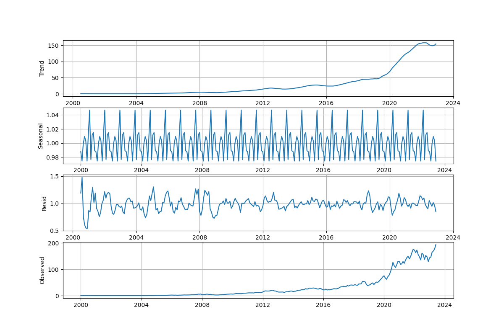

Основные моменты

Файл данных: AAPL_1mo_2000-01-01_2023-07-01.csv
Полный текст примера: decomposition_trend.py
import pandas as pd
from statsmodels.tsa.stattools import adfuller
from statsmodels.tsa.seasonal import seasonal_decompose
import matplotlib.pyplot as plt
STOCK_CODE = "AAPL"
START_DATE = "2000-01-01" # YYYY-DD-MM
END_DATE = "2023-07-01" # YYYY-DD-MM
INTERVAL = "1mo" # 1m, 2m, 5m, 15m, 30m, 60m, 90m, 1h, 1d, 5d, 1wk, 1mo, 3mo
df = pd.read_csv(STOCK_CODE+ "_" + INTERVAL + "_" + START_DATE + "_" + END_DATE + ".csv")
df.Date = pd.to_datetime(df.Date)
df = df.dropna()
df = df.set_index('Date')
result = seasonal_decompose(df, model='multiplicative')
plt.figure(figsize=(12,8))
fig1 = plt.figure(1)
ax1 = fig1.add_subplot(411)
ax1.set_ylabel('Trend')
ax1.grid(True)
plt.plot(result.trend)
ax2 = fig1.add_subplot(412)
ax2.set_ylabel('Seasonal')
ax2.grid(True)
plt.plot(result.seasonal)
ax3 = fig1.add_subplot(413)
ax3.set_ylabel('Resid')
ax3.grid(True)
plt.plot(result.resid)
ax4 = fig1.add_subplot(414)
ax4.set_ylabel('Observed')
ax4.grid(True)
plt.plot(result.observed)
fig1.savefig("pictures/decomposition_pic.png")